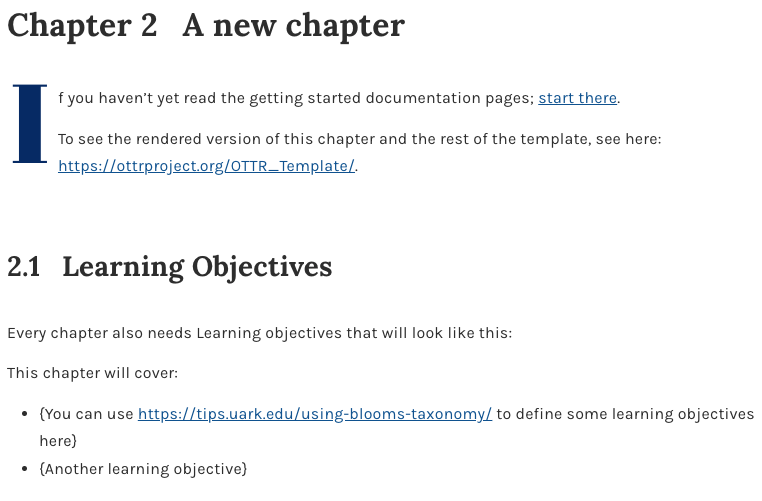
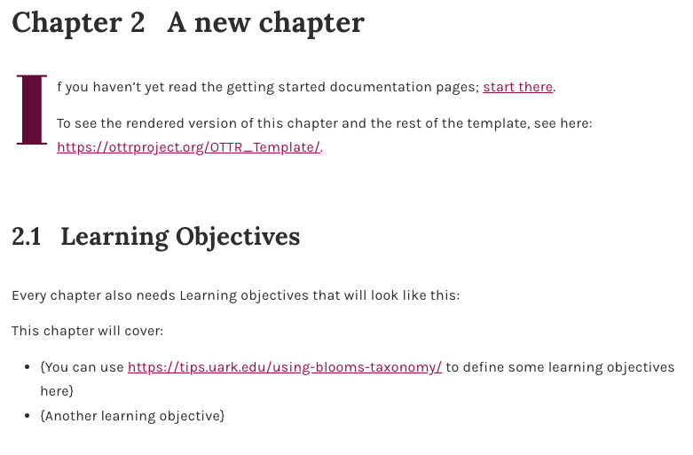
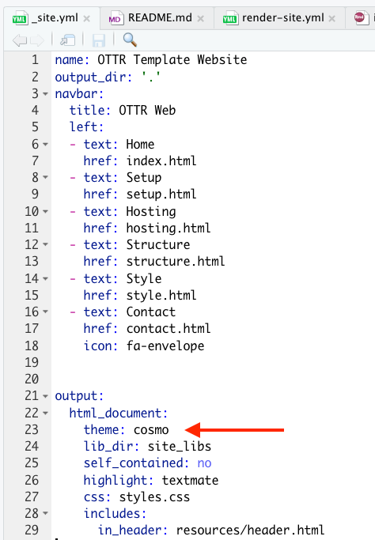

Customizing Style
Changing title
The title is specified on the index.qmd/index.Rmd page in the yml header. Modify the yaml header to change the title for your course.
---
title: "Title of Course"
---Note that if one of the chapter .qmd or .Rmd files has a title in the yml that comes first alphabetically, it will be shown as the title of the course. Hence avoid having yml header titles for the chapter files.
Customizing the Style
There are styles/brandings that are available in our library of style sets. These style sets are an alternative to customizing colors with style_config_default.css or style_config_custom.css. Changes to style_config_default.css will not influence a style set.
Changing course text colors
How Colors Are Controlled
Two CSS files work together to separate OTTR defaults from your customizations:
style_config_default.css
Gets synced from OTTR
- Defines all default CSS variables
- Ensures new variables exist before
style.cssreferences them - Do not edit, changes will be overwritten on sync
style_config_custom.css
Not synced
- Overrides defaults
- Set your custom colors here
- Changes are safe from future syncs
Customizing Your Colors
Edit style_config_custom.css to override any default variable:
:root {
--link-color: #your-color-here;
--heading-color: #your-color-here;
}- Open
style_config_custom.cssin your repository - Override only the variables you want to change
- Commit changes to a new branch and open a pull request
You only need to set the variables you want to change. Anything not set in style_config_custom.css will fall back to the defaults in style_config_default.css.
For example, within your assets/style_config_custom.css file, you would add:
:root {
--link-color: #a1005a; /* deep magenta for links */
--accent-color: #6e0040; /* dark rose (headings, emphasis) */
--highlight-color: #e754a6; /* vibrant pink for UI highlights */
--caption-color: #4a4a4a; /* neutral dark gray */
--background-color: #ffffff;
--callout-background-color: #f6e9f1; /* soft pink-tinted gray */
}
Recommended Resources
Venngage Color Accessibility Tool: https://venngage.com/tools/accessible-color-palette-generator
ColorBuddy: https://color-buddy.netlify.app/
Receiving CSS Updates via Sync
If your repo is enrolled in OTTR sync, future CSS improvements will be updated automatically via your pull request.
- Confirm you have enrolled for sync updates
style_config_default.csswill update on sync. Do not customize this file.- Your customizations in
style_config_custom.csswill not be touched
Overall theme
To change the color scheme/fonts of the website modify the theme in the _quarto.yml file (see here for options):

Change the favicon
The small image that shows up on the browser can also be changed.
You can make a small image to replace the existing one by going to https://favicon.io/favicon-converter/ and uploading an image that you would like.
Next, simply replace the image called favicon.ico in the images directory within the resources directory with the image you just created and downloaded from the favicon converter website.
Changing website colors
To customize colors for an OTTR website, change the variables in assets/style_config_default.css in your website repository.
For example, you can update color variables such as:
:root {
--banner-color: #your-color-here;
--button-color: #your-color-here;
}- Open
assets/style_config_default.cssin your website repository - Update the color variables you want to change
- Commit changes to a new branch and open a pull request
Recommended Resources
Venngage Color Accessibility Tool: https://venngage.com/tools/accessible-color-palette-generator
ColorBuddy: https://color-buddy.netlify.app/
Receiving CSS Updates via Sync
If your repo is enrolled in OTTR sync, future CSS improvements will be updated automatically via your pull request.
- Confirm you have enrolled for sync updates
style_config_default.csswill update on sync. Do not customize this file.- Your customizations in
style_config_custom.csswill not be touched
Using a style set
By default this course template will use the JHU Data Science Lab style. However, you can switch this to another style set by moving some files. Take a look at the style-sets for the other styles available.
Note
Style sets are an alternative to using style_config_default.css to control colors and branding. If you use a style set, changes to style_config_default.css will not influence the style set.
For example, if you are creating an ITCR course, you will need the files in style-sets/itcr or if you are making a DataTrail course, the files in style-sets/data-trail. For these instructions,let’s refer to data-trail or itcr as the <set-name>.
- On a new branch, copy the files for your template type. For R Markdown/Bookdown courses, copy
style-sets/<set-name>/index.Rmdandstyle-sets/<set-name>/_output.ymlto the top of the repository to overwrite the defaultindex.Rmdand_output.yml. For Quarto courses, updateindex.qmd,_quarto.yml, andstyles.cssto match the style set you are using. - Copy over all the files in the
style-sets/<set-name>/copy-to-assetsto theassetsfolder in the top of the repository. - Create a pull request with these changes, and double check the rendered preview to make sure that the style is what you are looking for.
Read here for more about how to customize your _output.yml file – which is ultimately a part of how bookdown works.
Creating your own style
Here are the instructions to change the aesthetic aspects about your course if you wish to create a new style for your course.
Changing the favicon
Favicons are small icons that appear on your browser tab. To change the favicon, first take the image you would like to use to this website to convert it into a favicon. Then save this file in the assets/ directory. On the index.qmd or index.Rmd file, make sure that the correct favicon is referenced to in the yaml header, so that the correct favicon will be used.
Here you can see that by default the Data Science Lab (dasl) favicon will be used.
---
title: "Course Name "
date: "August, 2026"
site: bookdown::bookdown_site
documentclass: book
bibliography: [book.bib, packages.bib]
biblio-style: apalike
link-citations: yes
description: "Description about Course/Book."
favicon: assets/dasl_favicon.ico
---If you are making an ITN course, then the favicon is already set up n the index-itcr.Rmd file. Just delete the existing index.Rmd file and rename the index-itcr.Rmd file to be index.Rmd. This is already part of the set up instructions.
Adding logos
Logos for the table of contents are added with the _output.yml file. This adds an image above the table of contents when the content is rendered with bookdown.
If you are creating a general DaSL course: - Please replace the URL in the line 13 of code for the _output.yml file with the URL for the GitHub repo for your course. This will allow people to more easily find how out how you created your course. Otherwise, they will be directed to this template.
If you are creating a DaSL course for a project other than ITN:
- Delete the
_output.ymlfile and rename the_output-itcr.ymlto be_output.yml. - Please modify the lines that link to the http://jhudatascience.org/ with your own website and logo if you are not part of the jhuDaSL .
- Please replace the URL in the line 13 of code with the URL for the GitHub repo for your course. This will allow people to more easily find how out how you created your course. Otherwise, they will be directed to this template.
- If you wish to create a different color scheme, the font colors can also be modified along with other aspects in the
assets/style.cssfile. Take a look at theassets/style_ITN.cssfile to see what was changed for that color scheme from theassets/style.cssfile. - You can replace the logo with the appropriate project logo by replacing
https://www.itcrtraining.org/with the project website link andresources/images/logo.pngfor the project logo image path in line 11.
Adding sections that aren’t numbered
You may notice that currently the References page and about pages are not numbered like the other chapters. If you want additional sections like this, add a .qmd or .Rmd file and type the name of the page after a single hashtag # followed by this: {-}. This will exclude this page from being numbered.
Thus as example the reference page looks like this:
# References {-}Modifying the image at the top of the course
If you would like to change the image at the top of the Bookdown version of the course, you need to do the following steps:
- Add a new image file to the
assetsdirectory - Modify the
assets/big-image.htmlfile on line 11. Change outsrc = "assets/dasl_thin_main_image.png"so thatdasl_thin_main_image.pngis replaced with the name of your image file.